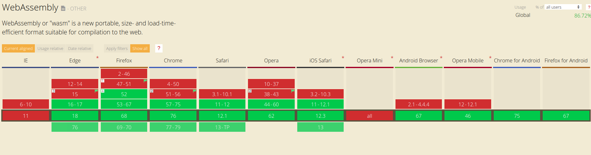

Python в браузере
Brython и Pyodide
Популярность
Python
- Web
- Data Science
- Newbies
Web
Web
Web

Data Science

Data Science
Data Science

Data Science

Newbies
MCPI
Python ⇨ Browser
Brython — виртуальная машина Python, написанная на Javascript.
Позволяет запустить код на Python 3
в веб-браузере.
Brython
- Добавить скрипт brython.js
- Добавить к body атрибут onload со значением brython()
- Писать Python код внутри
<script type="text/python">
<script type="text/python">
# PYTHON CODE
</script>
Brython Hello World
PY
from browser import document, alert
def echo(ev):
alert(f'Hello {document["input"].value}!')
document["button"].bind("click", echo)
Brython Hello World
HTML
<input id="input" value="World">
<button id="button">click!</button>
Brython Hello World
JS Bin on jsbin.comBrython Insert Element
PY
from browser import document, html
element = document["zone6"]
nb = 0
def change(event):
global nb
element <= html.LI(f" {nb}")
nb += 1
document["button6"].bind("click", change)
Brython Insert Element
PY
from browser import document, html
element = document["zone6"]
nb = 0
def change(event):
global nb
element <= html.LI(f" {nb}")
nb += 1
document["button6"].bind("click", change)
Brython Insert Element
JS Bin on jsbin.comBrython Async
from browser import document, html, aio
async def main():
pychel_banner_vk = "https://sun9-1.userapi.com/c851032/v851032348/ca167/zpzNgmKgUQY.jpg"
req = await aio.get(pychel_banner_vk, format="dataURL")
document <= html.IMG(src=req.data)
aio.run(main())
Brython Async
JS Bin on jsbin.comЗачем же мне Python
в браузере?
A/B experiments CIAN
Доклад Ивана Бабкова на эту тему
- Cгенерировать 2 бакета с группами
- Разделить массив от 1 до 100 на 2 бакета
- ...
- Я сделаю с помощью Python это за 5 строчек
Те самые 5 строк
import random
all = range(0, 100)
active = random.sample(all, 50)
active.sort()
inactive = list(set(all) - set(active))
Brython Generate Buckets
from browser import document, html
from random import sample
buckets = Buckets()
def add_text(value):
text = document.querySelector('textarea')
text.value = value
def print_buckets():
[first, second] = buckets.get_buckets(int(document["num"].value))
add_text(f'First Bucket:\n{first}\n\nSecond Bucket:\n{second}')
document["button"].bind("click", print_buckets)
Brython Generate Buckets
from browser import document, html
class Buckets(object):
def __init__(self):
self.start_input = document.getElementById('start')
self.end_input = document.getElementById('end')
@property
def start(self):
return int(self.start_input.value)
@property
def end(self):
return int(self.end_input.value)
def get_buckets(self, num):
all = list(range(self.start, self.end))
active = sample(all, num)
active.sort()
inactive = list(set(all) - set(active))
return [inactive, active]
Brython Generate Buckets
JS Bin on jsbin.comBrython Online
Python ⇨ Browser
Pyodide — скомпилированный научный стек Python для запуска в WebAssembly.
WebAssembly (wasm)
- бинарный формат инструкций для стековой виртуальной машины.
- проектирован как портативная цель компиляции для высокоуровневых языков, таких как C/C++/Rust, которую можно развертывать в web для клиентских и серверных приложений.

WebAssembly CanIUse
Pyodide Example
from js import document, iodide
canvas = iodide.output.element('canvas')
canvas.setAttribute('width', 450)
canvas.setAttribute('height', 300)
context = canvas.getContext("2d")
context.strokeStyle = "#df4b26"
context.lineJoin = "round"
context.lineWidth = 5
pen = False
lastPoint = (0, 0)
canvas.addEventListener('mousemove', onmousemove)
canvas.addEventListener('mousedown', onmousedown)
canvas.addEventListener('mouseup', onmouseup)
Pyodide Example
def onmousemove(e):
global lastPoint
if pen:
newPoint = (e.offsetX, e.offsetY)
context.beginPath()
context.moveTo(lastPoint[0], lastPoint[1])
context.lineTo(newPoint[0], newPoint[1])
context.closePath()
context.stroke()
lastPoint = newPoint
def onmousedown(e):
global pen, lastPoint
pen = True
lastPoint = (e.offsetX, e.offsetY)
def onmouseup(e):
global pen
pen = False
Pyodide из Iodide
%% fetch
// load a js library and a csv file with a fetch cell
js: https://cdnjs.cloudflare.com/ajax/libs/d3/4.10.2/d3.js
text: csvDataString = https://data.sfgov.org/api/views/5cei-gny5/rows.csv?accessType=DOWNLOAD
%% js
// parse the data using the d3 library (and show the value in the console)
parsedData = d3.csvParse(csvDataString)
%% js
// replace the text in the report element "htmlInMd"
document.getElementById('htmlInMd').innerText = parsedData[0].Address
%% py
# use python to select some of the data
from js import parsedData
[x['Address'] for x in parsedData if x['Lead Remediation'] == 'true']
Pyodide из JS
languagePluginLoader.then(() => {
// pyodide is now ready to use...
console.log(pyodide.runPython('import sys\nsys.version'));
});
Что есть из коробки в Pyodide?
- NumPy
- Pandas
- Matplotlib
- SciPy (partially)
- NetworkX
- Jinja2
Что не работает в Pyodide
Probably never
- Raw network sockets
- Subprocesses
- Raw filesystem access
Что не работает в Pyodide
Should work someday
- threads
- async
Jinja time!
PY
obj = [{'title': 'title'}, {'title': 'AnOtHer tITle'}]
main_title = 'Print Me, please'
def truncate_text(s, l = 10):
return s[0:l-3] + '...' if len(s) > l else s
def reverse_filter(s):
return s[::-1]
env.filters['reverse_filter'] = reverse_filter
Template
<h1>{{main_title|reverse_filter}}</h1>
{% for o in obj %}
<p>
<span>({{loop.index}})</span>
<span>{{o.title|striptags|title}}</span>
</p>
{% endfor %}